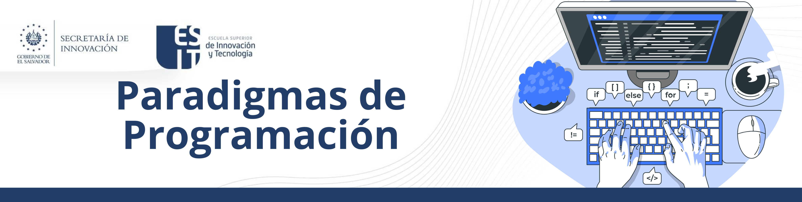

1. Conceptos Fundamentales de Programación
6. Paradigmas de Programación
Los paradigmas de programación son enfoques y estilos fundamentales que guían la estructura y elementos de los programas de software. Cada paradigma tiene su propio conjunto de conceptos y prácticas que definen cómo los programadores deben abordar la resolución de problemas y el diseño de software. A continuación se presentan los principales paradigmas de programación, junto con sus características y ejemplos.
1. Programación Imperativa
La programación imperativa es un paradigma en el que los programas se construyen mediante una secuencia de instrucciones que cambian el estado del programa. Este paradigma se centra en describir cómo se deben realizar las operaciones.
Características
- Instrucciones Secuenciales: El código se ejecuta en un orden específico.
- Modificación de Estado: Utiliza variables que pueden cambiar su valor durante la ejecución.
- Control de Flujo: Incluye estructuras como bucles (for, while) y condicionales (if, else).
Ejemplos de Lenguajes
- C: Uno de los lenguajes más influyentes y ampliamente utilizados.
- Pascal: Usado principalmente en educación.
- Assembly: Lenguaje de bajo nivel usado para programación directa de hardware.
2. Programación Declarativa
La programación declarativa se centra en describir qué debe hacer el programa sin especificar cómo hacerlo. Se centra en el resultado deseado en lugar de en el proceso.
Características
- Descripciones de Objetivos: Los programadores declaran propiedades y relaciones de los datos.
- Sin Control de Flujo Explícito: No se especifica el orden de ejecución.
Ejemplos de Lenguajes
- SQL: Utilizado para consultas y manipulación de bases de datos.
- Prolog: Utilizado en inteligencia artificial y procesamiento de lenguajes naturales.
- HTML: Usado para definir el contenido y la estructura de páginas web.
3. Programación Funcional
La programación funcional es un paradigma que trata la computación como la evaluación de funciones matemáticas y evita cambiar el estado y los datos mutables.
Características
- Funciones Puras: Funciones sin efectos secundarios.
- Inmutabilidad: Los datos no cambian después de ser creados.
- Composición de Funciones: Crear funciones complejas mediante la combinación de funciones simples.
Ejemplos de Lenguajes
- Haskell: Un lenguaje puramente funcional.
- Erlang: Usado en sistemas concurrentes y de alta disponibilidad.
- Scala: Combina programación funcional y orientada a objetos.
4. Programación Orientada a Objetos (POO)
La programación orientada a objetos organiza el software en unidades llamadas objetos, que contienen datos y métodos que operan sobre esos datos.
Características
- Encapsulamiento: Agrupa datos y métodos que operan sobre esos datos dentro de objetos.
- Herencia: Permite que los objetos compartan y extiendan características de otros objetos.
- Polimorfismo: Permite usar objetos de diferentes tipos a través de una interfaz común.
Ejemplos de Lenguajes
- Java: Uno de los lenguajes más populares para aplicaciones empresariales.
- C++: Combina programación orientada a objetos con programación de bajo nivel.
- Python: Lenguaje multiparadigma que soporta POO.
5. Programación Basada en Componentes
La programación basada en componentes se centra en la construcción de software mediante la combinación de componentes reutilizables.
Características
- Reusabilidad: Componentes diseñados para ser reutilizados en diferentes contextos.
- Interoperabilidad: Componentes que pueden trabajar juntos, a menudo mediante interfaces bien definidas.
- Encapsulación: Componentes que ocultan su implementación interna y exponen solo la funcionalidad necesaria.
Ejemplos de Lenguajes/Plataformas
- COM (Component Object Model): Utilizado principalmente en software de Microsoft.
- JavaBeans: Componentes reutilizables para Java.
- .NET: Utiliza ensamblados y componentes para construir aplicaciones.
6. Programación Lógica
La programación lógica es un paradigma basado en la lógica formal, donde los programas se expresan en términos de relaciones y reglas lógicas.
Características
- Declaración de Hechos y Reglas: Los programas consisten en hechos y reglas que describen relaciones lógicas.
- Inferencia Automática: El motor de inferencia deduce respuestas basadas en las reglas y hechos.
Ejemplos de Lenguajes
- Prolog: Utilizado en inteligencia artificial y resolución de problemas.
- Datalog: Un lenguaje de consulta lógico basado en Prolog.
7. Programación Concurrente
La programación concurrente permite que múltiples procesos o hilos de ejecución se ejecuten de manera simultánea, coordinando y comunicándose entre sí.
Características
- Paralelismo: Ejecución simultánea de múltiples procesos.
- Sincronización: Coordinación entre procesos para evitar conflictos y asegurar la coherencia.
- Comunicaciones entre Procesos: Intercambio de datos entre procesos concurrentes.
Ejemplos de Lenguajes
- Erlang: Diseñado para sistemas concurrentes y distribuidos.
- Go: Lenguaje de programación con soporte nativo para concurrencia.
- Java: Soporta programación concurrente a través de hilos y bibliotecas.
Obra publicada con Licencia Creative Commons Reconocimiento Compartir igual 4.0